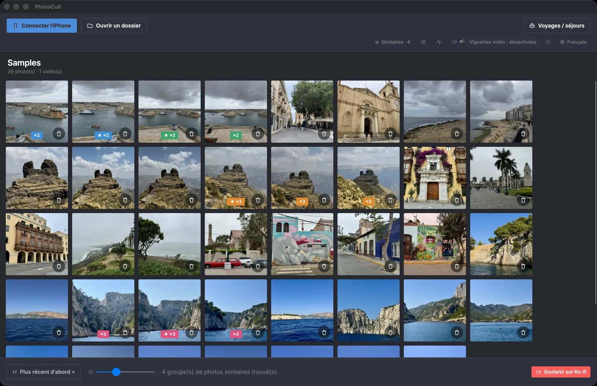
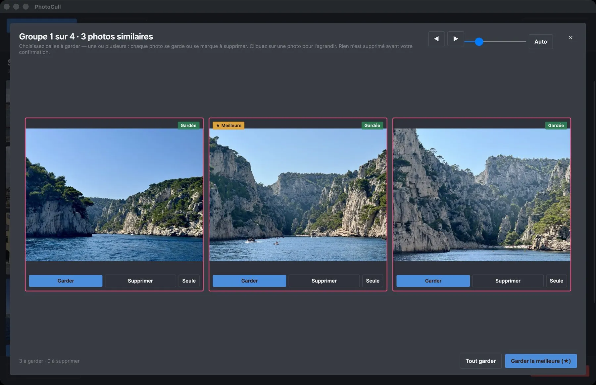
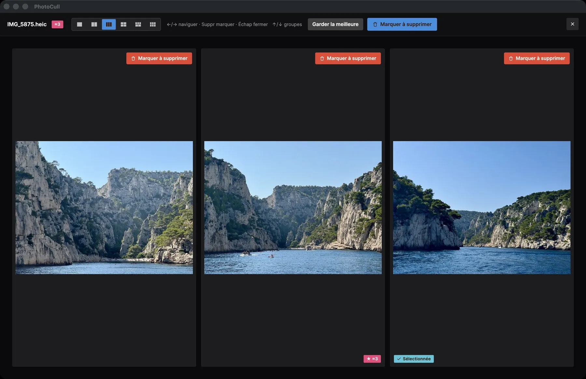
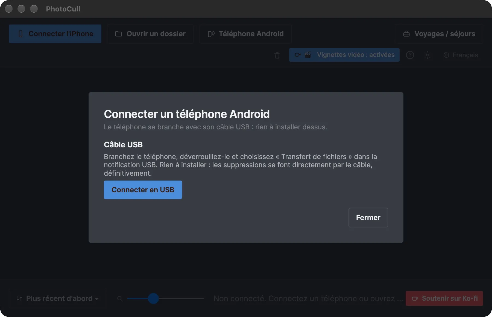

Triez des milliers de photos d'iPhone et d'Android sur Mac ou PC
PhotoCull est une application de bureau à part entière : elle affiche tout le rouleau de votre iPhone ou de votre téléphone Android regroupé par séjour, compare vos photos côte à côte, et supprime en masse ce qui ne vaut plus la peine d'être gardé — directement depuis votre Mac ou votre PC.

Un aperçu de l'app



Connectez votre téléphone en une minute
Au premier lancement, PhotoCull demande où sont vos photos et vous guide pas à pas.
iPhone, en USB
Mac et Windows. Branchez l'iPhone, déverrouillez-le et touchez « Se fier », puis cliquez sur « Connecter l'iPhone ». Sous Windows, installez d'abord l'app gratuite Appareils Apple.
Android, en USB
Windows, et Mac sous macOS 27 ou ultérieur. Déverrouillez le téléphone, branchez-le et choisissez « Transfert de fichiers » dans sa notification USB, puis cliquez sur « Téléphone Android » et « Connecter en USB ». Rien à installer sur le téléphone.
Un dossier
N'importe quel dossier de votre ordinateur ou d'un disque : cliquez sur « Ouvrir un dossier » ou glissez-le sur la fenêtre. Sans téléphone, sans limite quotidienne.
Ce que fait l'app
Vue "Voyages / séjours"
Toute votre photothèque regroupée automatiquement par séjour (temps ET lieu) — pour repérer d'un coup d'œil les voyages qui prennent le plus de place.
Comparaison côte à côte
Affichez jusqu'à 6 photos similaires en même temps pour choisir la meilleure — idéal pour trier les rafales et les quasi-doublons.
Suppression en masse, en toute sécurité
Marquez des centaines de photos en quelques clics. Sur un iPhone ou un téléphone Android, PhotoCull les supprime directement par le câble USB et garde par défaut une copie sur votre ordinateur pendant 30 jours ; dans un dossier, elles vont à la Corbeille. Détails et conditions plus bas.
Le poids qui compte
Triez et filtrez par séjour d'1 jour, par lieu exclu (domicile, travail...), par poids — des filtres pensés pour aller vite.
Connexion directe au téléphone
Branchez votre iPhone ou votre téléphone Android avec un câble USB : PhotoCull lit votre rouleau directement, sans cloud ni serveur.
100 % sur l'appareil
Aucune photo, aucune position GPS n'est jamais envoyée où que ce soit. La reconnaissance des lieux fonctionne entièrement en local, sans compte ni abonnement.
Gratuit, vraiment
Ni abonnement, ni achat intégré, ni compte.
PhotoCull
0 $
Parcourez, comparez, triez et supprimez, sur un iPhone, un téléphone Android ou un dossier, sans limite quotidienne. Mac et Windows.
PhotoCull fonctionne seul : aucune autre app à acheter ni à installer.
Supprimer depuis l'ordinateur : iPhone et Android
iPhone : PhotoCull supprime les photos directement par le câble USB, sans limite quotidienne et sans rien à acheter. Cela fonctionne sur tout PC Windows 10/11 et sur un Mac sous macOS 27 ou ultérieur, avec Photos iCloud désactivé sur l'iPhone (quand il est activé, Apple n'autorise pas cette suppression : désactivez-le dans Réglages > [votre nom] > iCloud > Photos, ou supprimez dans l'app Photos de l'iPhone). La suppression est immédiate et définitive sur l'iPhone : les photos ne passent pas par « Supprimés récemment ». Par défaut, PhotoCull garde pendant 30 jours une copie de chaque élément supprimé sur votre ordinateur, dans un dossier « PhotoCull Trash » du dossier Images, de sorte qu'une erreur peut être annulée en réimportant le fichier. Sous macOS 26 ou antérieur, PhotoCull affiche et trie les photos de l'iPhone mais ne peut pas les supprimer : un bandeau l'indique dans l'app, et vous supprimez dans l'app Photos de l'iPhone.
Android : PhotoCull supprime aussi les photos directement par le câble USB, sur tout PC Windows 10/11 et sur un Mac sous macOS 27 ou ultérieur, sans rien à installer sur le téléphone. La suppression est immédiate et définitive (les photos ne passent pas par la corbeille du téléphone), avec la même copie de 30 jours sur l'ordinateur. Dans les dossiers du Mac ou du PC, les fichiers vont à la Corbeille.
Guides pour trier vos photos sur ordinateur
Comment trier les photos de son iPhone sur Mac
Triez des milliers de photos d'iPhone sur votre Mac : ce que Photos et Transfert d'images savent faire, et une méthode plus rapide pour trier.
Comment trier les photos de son iPhone sur PC Windows
Triez des milliers de photos d'iPhone sur Windows 10 ou 11 : ce que montrent l'app Photos et l'Explorateur, et une méthode plus rapide pour trier.
Comment trier des milliers de photos plus vite sur Mac ou PC
Pourquoi trier ses photos sur grand écran va bien plus vite que sur un téléphone, et une méthode simple pour en trier des milliers en une séance.
Comment libérer de l'espace sur votre iPhone depuis un Mac ou un PC Windows
Branchez votre iPhone, triez vos photos sur grand écran et supprimez ce dont vous n'avez pas besoin, sans iCloud et sans rien envoyer en ligne.
Comment comparer des photos similaires et garder la meilleure
Une routine simple pour choisir la meilleure prise parmi des photos quasi identiques : ce qu'il faut regarder, et comment aller vite sur grand écran.
Comment trouver les photos en double et similaires sur Mac
Trouvez copies exactes, rafales et prises quasi identiques dans vos dossiers photos ou sur un disque externe, gardez la meilleure et supprimez le reste.
Comment trouver les photos en double et similaires sur Windows 10 ou 11
Trouvez copies exactes, rafales et prises quasi identiques dans vos dossiers photos ou sur un disque externe, gardez la meilleure et supprimez le reste.
Comment trier un gros dossier de photos, ou tout un disque dur externe
Vieilles sauvegardes, cartes mémoire, disque externe plein de photos : une méthode simple pour trier des milliers de fichiers par voyage et garder le meilleur.
Comment trier les photos de son téléphone Android sur Mac
Un Mac a longtemps eu du mal à lire les Android en USB. Comment trier des milliers de photos Android sur Mac avec macOS 27 et supprimer le superflu.
Comment trier les photos de son téléphone Android sur PC Windows
Triez des milliers de photos Android sur Windows 10 ou 11 : ce que montrent l'Explorateur et l'app Photos, et une méthode plus rapide pour trier et supprimer.
Comment libérer de l'espace sur votre téléphone Android depuis un Mac ou un PC
Connectez votre Android en USB, triez vos photos sur grand écran et supprimez le superflu, sans payer Google One et sans rien envoyer en ligne.